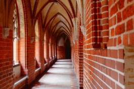
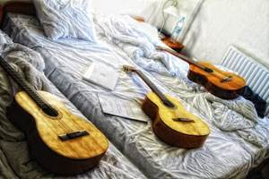

Visiting the Ghetto and Exploring Warsaw
Warsaw, Poland
November 2011
I have to say my experience in Poland was pretty good. I did not particularly like the architecture in Poland but any opportunity to explore a foreign country is always refreshing. I spent three days in Gdansk and 5 days in Warsaw and learned about the start of the Second World War and the Warsaw Uprising. Personally, I think if you went to a country in Central Europe, you would have had enough of the European taste. Poland was to me, very similar to Czech Republic because they both speak in the Slavic tongue and you could almost always get the European “feel,” it’s not like flying from China to Brazil where the culture and environment are different. Nevertheless, Poland had a lot to offer, especially its Pierogi and extremely rich history.
My program has over 140+ students and we split in two groups for the excursions. One group went to Munich/Vienna and the other went to Gdansk and Warsaw. My train to Gdansk was quite pleasant as I saw beautiful landscapes and kept myself occupied with my two friends’ guitars, but other people in my trip had a terrible time. The director of my program even got pickpocketted. It was the most ironic thing in the trip; he told us to keep our wallets in our inside pockets and somehow he was the one that got mugged. We stayed in a hotel and that was super amazing. The location was far away from the main attractions but none of us seemed to mind. Polish people are nice, I bet, but they speak with such deep tone that I get intimidated, even the women. The first night there was all about exploring Old Town and finding a restaurant to eat. I offered to spot my director because I thought he didn’t have money to eat dinner but the smart man actually had 200 Euro in his backpack (or so he claimed). Polish currency is called “Zloty.” Three zlotys are worth a dollar which makes Poland one of my cheaper countries to consume.
The next day we were on a pirate ship to Gdynia and learned the history of Westerplatte, the site that WWII “officially” began with German attack on Polish military installations. The Germans opened fire first and killed 15 Polish soldiers but the Polish retaliated and killed around a hundred Nazis. The following day we went to the Malbork Castle, previously known as Marienburg, the biggest castle in the WORLD by area. The tour included a visit to the Toilet Tower (the Teutonic knights would excrete down a hole to a flowing river surrounding the moat) and various sites like the church and dining hall. These 13th century people prayed a lot, essentially before they did anything. Gdansk was a great sight-seeing; the pirate ship was almost exactly like the Black Pearl and the people on deck dressed like Captain Jack. There was one fault though, and a big one if I may say, the darn ship was fake! It was mechanical and accelerated by means of machines and other engineering components. The sail was there for show and did absolutely nothing despite the strong wind that day. The ship cheated in every aspects of a real pirate ship, it even had a fire extinguisher on board! I wanted to bust out a Jack & Rose pose from Titanic on the tip of the ship, but, of course, I had no woman to perform this romantic act with. As for the Malbork castle, it was in every way that I expected it to be. The castle was nearly demolished in the war but kept true to its brick architecture when rebuilt. I like to picture a movie or famous character to remember the site that I visit, so this one definitely goes to Robin Hood. How cool is it to climb up the toilet from the moat and steal money from the knights? I may even use the money to help the poor pirates to buy a real ship.
The next day we left Gdansk and headed to Warsaw. The ride there was 7 hours but seemed like 4 thanks to the guitars again. No one got mugged this time, thank God. We stayed in a two star hotel in a sketchy neighborhood. Warsaw only has one subway line so getting lost is no excuse. It does, however, have many trams that connect to various districts in the city. I got a $35 ticket one night for forgetting my day pass ticket in my hotel room. I had a different day pass (for the next day) that was not validated and the inspector wouldn’t let me stamp it even though the machine was right in front of me. In contrast to my many mistakes in the past, this was not entirely my fault – it was simply a mistake for not confirming the pass. It wasn’t like I didn’t buy the ticket and purposely cheated. This is the kind of mistake that happens every now and then. Anyways, “experience is not what happens to a man, it’s what a man does to what happens to him.” I took it well and did not flee the scene (although you should know that I was wearing my running shoes that night).
In Warsaw we did a walking tour around the main district. We went to the Royal Castle. The entire castle including the façade but except the door was destroyed in the war. We also visited the Jewish Ghetto and synagogue and explored the two uprisings that resulted in bloodbath. I had always known that Hitler was a very bad man and that many innocent people were killed in the war, but you really need to see visually the destruction and psychological impact the war had on the Jewish. They were separated from their friends and families and ostracized to a concentration camp where they were treated no less of an animal. I just wish that everyone could just hold hands together and live in harmony, and I think it’s important that I share this with you because it really is a tragedy that this country had to endure such pain. On Friday of that week some people went to Auschwitz , which was five hours away from Warsaw, to visit the biggest concentration camp in history. I didn’t go but I learned that over half a million Jews died there. The remains were displayed for show and those that were alive were used for Nazi experiments. The majority died in the gas chamber or from starvation. Even living was worse than death; they were cramped up in a small room without beds. Their daily routine started at 4:30 AM with the wake of fire hose. They would work in labor and walk around with Nazi’s tormented small shoes. All this discrimination, prejudice, intolerance was because they were Jews – an identity connoted by a single monster.
On our last night there we had a recital of Friedrich Chopin given by a local professor from Julliard. It was like, bombastic. I had the best seat in the room and saw all his hand movements, well, almost, the guy was like skipping dipping in the water, very smoothly and subtle. That day I got lost and stumbled upon the biggest mall in the country (Arkadia). I went to a music store and bought myself a Yamaha guitar. Yes, Yamaha, no more of those Chinese toys. This is my seventh guitar to my collection and it’s nowhere like my Rodriguez guitar (my best and most expensive instrument). However, for the price that I paid it was fair. Being the Asian that I am, I bargained and low-balled to get a 12% discount, which was basically a free bag case. I plan on giving this to my nephews when I come back. They’re only two years old so I guess their uncle will just have to play with it for a while more, but I will definitely teach them everything when the time is right.
So yeah, that sums up my trip. There are more stories but some are best untold (if you know what I mean). Ultimately, my program did quite a handful activity but we spent a fifth of our time on the train. I’m currently back in Berlin finishing my 28 page research paper and eating cold noodles. My time in Europe is almost up and I’m flying back to the states on December 10. It is already hard to believe my adventure is almost over. I never paid so much for anything in my life before, but this program has definitely de-stressed me in many ways and I hope to come back stronger and more prepared for other challenges / endeavors in my future.
One more thing, of all my times playing the guitar on the train and hotel, I was praised by many students and some even suggested that I’d busk on the street. So, today I gathered all the confidence in me, picked up my new guitar and caught a subway to the tourist center of Berlin. I played for exactly 35 minutes (yes, I timed myself) and made… oh….not much…. 23 euro cents! Can you believe that!?! A 20 cent coin and three pennies from a man 25 minutes into my performance. I mean, it was really funny, and despite my unspeakable earning, I actually had a great time. People just walked pass and stared at me and I’d just be doing my thang. I played Juan Martin’s Farruca (you should Youtube this if you don’t know what it is) and even Justin Bieber’s Baby! If Baby doesn’t tickle your twinkle, then I really don’t know what gets the job done then. No sweats though, my self-esteem didn’t go down, people were probably just in a rush or didn’t have spare changes.